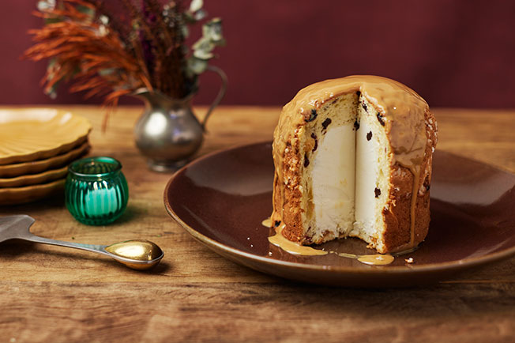

Panetone com Sorvete

Um clássico dos anos 1990 que transforma o ícone do Natal em uma sobremesa ideal para o calorão de dezembro.
É bom revisar uma regra básica: quanto melhor for o panetone e o sorvete, melhor será o panetone recheado de sorvete.
Para dar uma camada a mais de gostosura, ele é servido com calda de doce de leite.
Ingredientes:
- 1 panetone médio (entre 500 g e 650 g)
- 600 g de sorvete de baunilha
Passo a passo:
- Retire o sorvete do congelador e mantenha em temperatura ambiente enquanto prepara o panetone – assim ele fica menos firme para manusear.
- Com cuidado para manter o formato, retire o panetone da fôrma de papel. Com uma faca de pão, corte o panetone pela base para retirar todo o miolo (como se fosse um cilindro), deixando cerca de 2 cm de borda, com cuidado para não atingir o topo.
- Afaste o miolo da borda com uma colher e vá puxando delicadamente para fora, com cuidado para a borda não rachar (se preferir, puxe delicadamente o miolo do panetone com as mãos).
- Preencha toda a cavidade do panetone com o sorvete, apertando delicadamente com a colher para não deixar espaços vazios.
- Corte uma fatia de cerca de 2 cm da base do miolo que foi retirado e encaixe na abertura do panetone para fechar.
- Transfira o panetone recheado de volta para o saco da embalagem (ou um saco para alimentos), feche bem e leve ao freezer por pelo menos 4h antes de servir (se preferir, prepare no dia anterior).